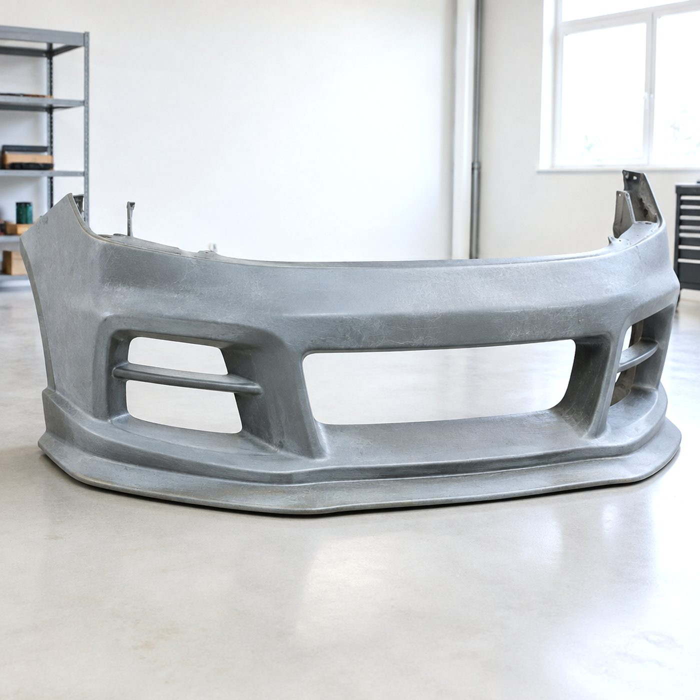

Покраска и подготовка
Деталь из стеклопластика нельзя просто «покрасить сверху»: сначала подготовка, потом грунт, потом цвет. Вот как это устроено и что выбрать.
С гелькоутом или под покраску
Переключите режим, чтобы увидеть, что входит в каждый вариант и что придётся делать дальше.
Порядок работ
Порядок не переставляется: каждый следующий слой держится на предыдущем.
Подгонка
Сначала посадка по месту: подрезать, где нужно, проще до покраски.
Шпатлёвка и шлифовка
Убираются неровности, стыки и следы матрицы.
Грунт
Защищает стеклопластик и даёт поверхность под краску.
Краска и лак
Цвет подбирается по кузову, при необходимости с переходом.
Сборка
Установка с крепежом, герметиком и проверкой зазоров.
Подбор цвета
Оттенок стеклопластика и металла можно свести, если делать это правильно.
Уход за поверхностью
Мойка
Без абразивов и жёстких щёток: поверхность и лак берегут.
Сколы
Мелкие сколы подкрашиваются, чтобы влага не попадала в слой.
Зимой
Реагенты смываются: на кромках они задерживаются дольше всего.
Вопросы по покраске
Можно покрасить самому?
Можно, если есть опыт со стеклопластиком: он требует аккуратной подготовки. Иначе поверхность быстро покажет дефекты.
Нужно ли грунтовать под краску?
Да, грунт обязателен. Без него краска держится плохо.
Почему нужен переход?
Металлик и перламутр меняют оттенок от угла, поэтому панель «в цвет» часто не совпадает без перехода.
Нужно покрасить деталь в цвет кузова?
Позвоните: обсудим подготовку, цвет и объём работ.